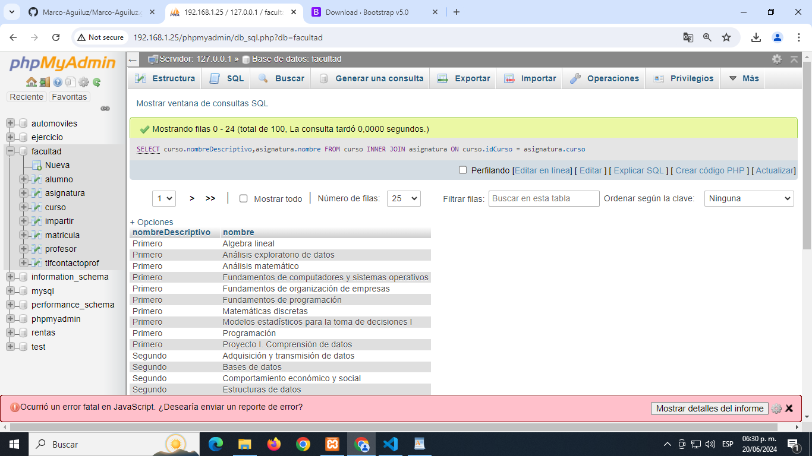
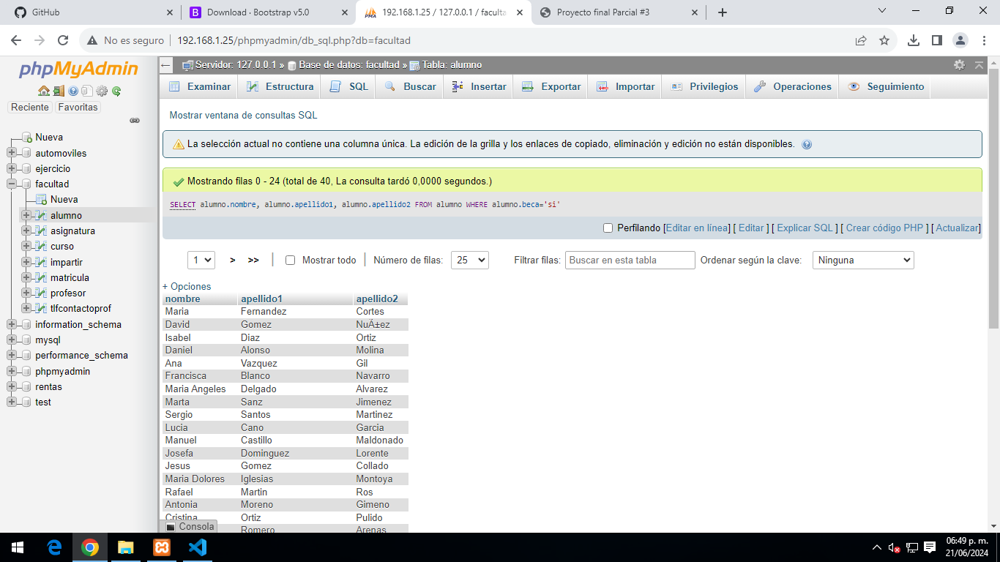
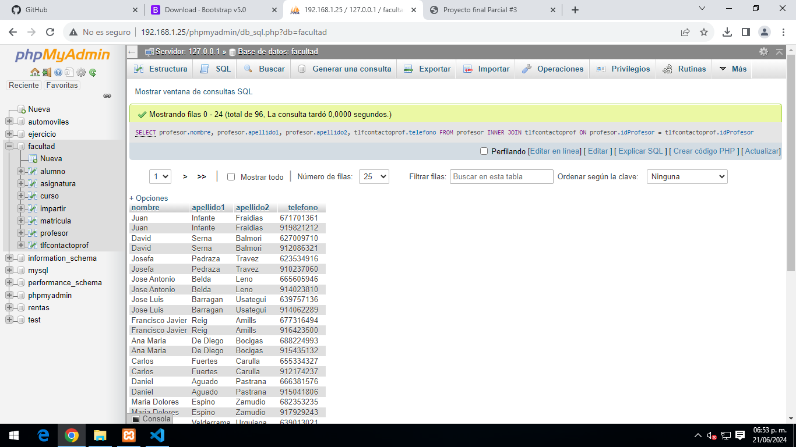
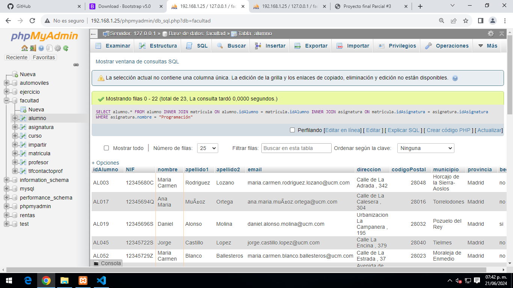
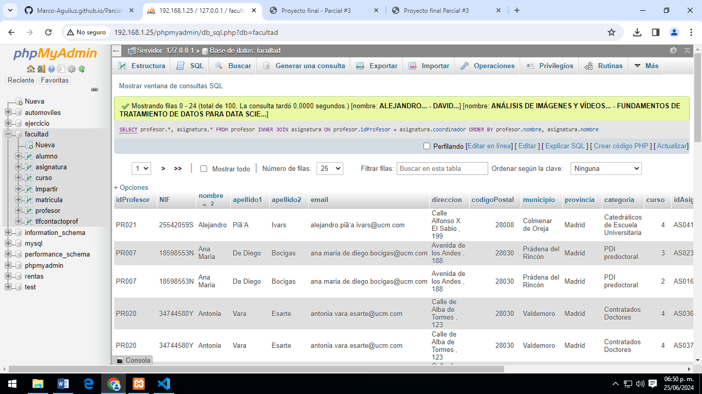
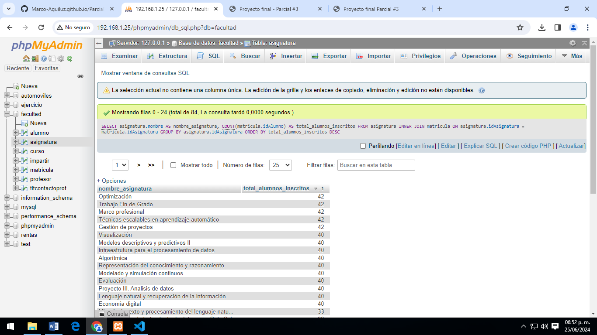
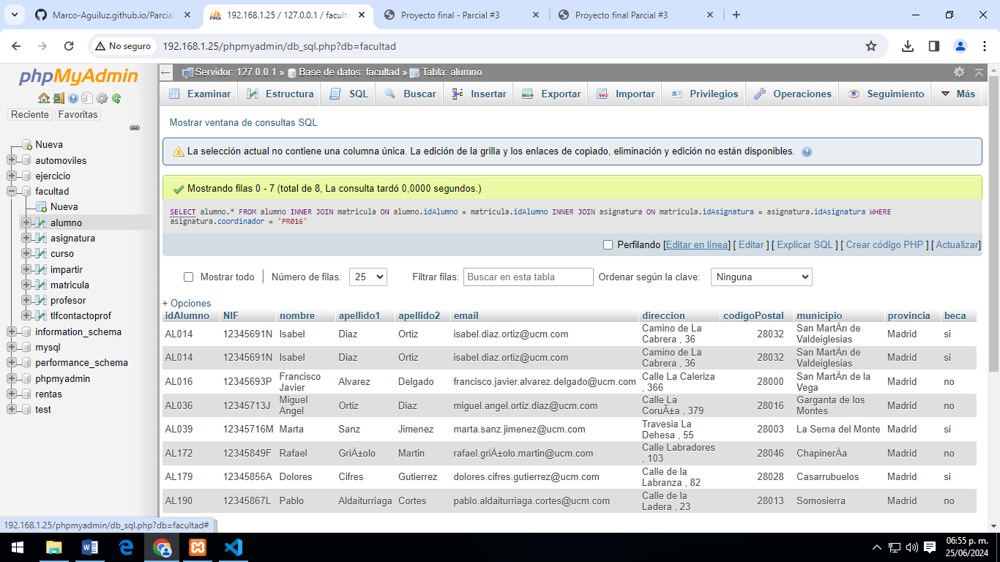
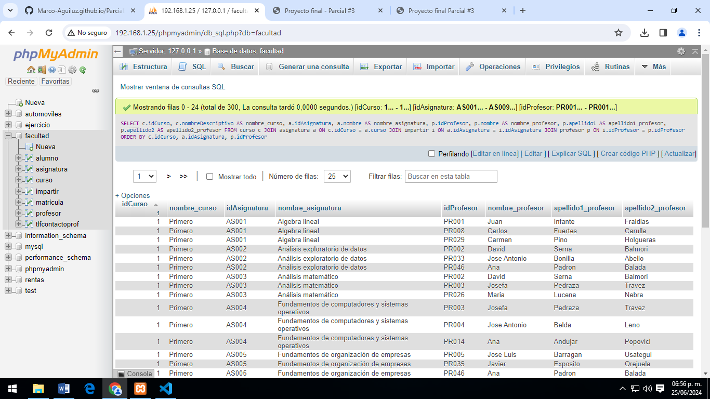

SELECT * FROM alumno;
Consulta #1. obtener el listado de todos los alumnos de la facultad.
.png)
SELECT * FROM alumno;
Consulta #2. Obtener el listado de los cursos (nombres) y su asignatura correspondiente.
SELECT alumno.nombre, alumno.apellido1, alumno.apellido2 FROM alumno WHERE alumno.beca='si';
Consulta #3. Obtener listado (NOMBRE Y APELLIDO) de alumnos que tengan beca.
SELECT profesor.nombre, profesor.apellido1, profesor.apellido2, tlfcontactoprof.telefono FROM profesor INNER JOIN tlfcontactoprof ON profesor.idProfesor = tlfcontactoprof.idProfesor;
Consulta #4. Obtener listado de profesores (NOMBRE Y APELLIDO) y su numero de contacto.
SELECT alumno.* FROM alumno INNER JOIN matricula ON alumno.idAlumno = matricula.idAlumno INNER JOIN asignatura ON matricula.idAsignatura = asignatura.idAsignatura WHERE asignatura.nombre = "Programación"
Consulta #5. Obtener listado de alumnos (todos los campos) que están inscritos a la asignatura de programación.
SELECT profesor.*, asignatura.* FROM profesor INNER JOIN asignatura ON profesor.idProfesor = asignatura.coordinador ORDER BY profesor.nombre, asignatura.nombre
Consulta #6. Obtener listado de profesores y asignaturas que imparten.
SELECT asignatura.nombre AS nombre_asignatura, COUNT(matricula.idAlumno) AS total_alumnos_inscritos FROM asignatura INNER JOIN matricula ON asignatura.idAsignatura = matricula.idAsignatura GROUP BY asignatura.idAsignatura ORDER BY total_alumnos_inscritos DESC
Consulta #7. Mostrar la asignatura que tiene más alumnos y su total.
SELECT alumno.* FROM alumno INNER JOIN matricula ON alumno.idAlumno = matricula.idAlumno INNER JOIN asignatura ON matricula.idAsignatura = asignatura.idAsignatura WHERE asignatura.coordinador = 'PR016'
Consulta #8. Obtener listado de alumnos que les da clase el profesor con ID PRO48 (Jose Manuel), sin importar en qué asignatura esté escrito
SELECT c.idCurso, c.nombreDescriptivo AS nombre_curso, a.idAsignatura, a.nombre AS nombre_asignatura, p.idProfesor, p.nombre AS nombre_profesor, p.apellido1 AS apellido1_profesor, p.apellido2 AS apellido2_profesor FROM curso c JOIN asignatura a ON c.idCurso = a.curso JOIN impartir i ON a.idAsignatura = i.idAsignatura JOIN profesor p ON i.idProfesor = p.idProfesor ORDER BY c.idCurso, a.idAsignatura, p.idProfesor;
Consulta #9. Obtener el listado de cursos, con asignatura, y el maestro que les imparte.
SELECT al.idAlumno, al.nombre AS nombre_alumno, al.apellido1 AS apellido1_alumno, al.apellido2 AS apellido2_alumno, a.idAsignatura, a.nombre AS nombre_asignatura, p.idProfesor, p.nombre AS nombre_profesor, p.apellido1 AS apellido1_profesor, p.apellido2 AS apellido2_profesor, c.idCurso, c.nombreDescriptivo AS nombre_curso FROM alumno al JOIN matricula m ON al.idAlumno = m.idAlumno JOIN asignatura a ON m.idAsignatura = a.idAsignatura JOIN impartir i ON a.idAsignatura = i.idAsignatura JOIN profesor p ON i.idProfesor = p.idProfesor JOIN curso c ON a.curso = c.idCurso ORDER BY al.idAlumno, a.idAsignatura
Consulta #10. Obtener ellistado de alumnos, con asignatura que cursa, profesor que la imparte y curso al que pertenece.